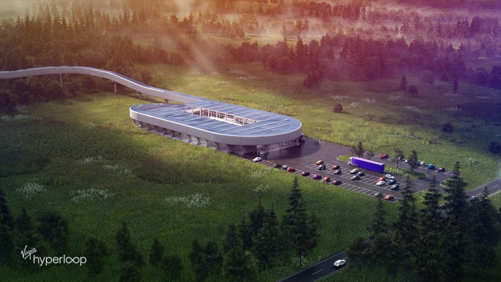

Musee Atelier Audmars Piguet La Brassus, Switzerland
VSTR
The Plus Gaustrdvegen, Magnor, Norway
BKB
Back to the Future Brooklyn, New York, USA
PSI
Biodivercity Penang Penang, Malaysir
TFC
AI City Chongqing, China
HCC
Hyperloop Certification Center West Virginia, USA
Pegasus
Virgin Hyperloop Pegasus Las Vegas, Nevada, USA
E126
The Smile New York City, New York, USA
A Deeper Dive
TWC
Toyota Woven City will start being built sometime in 2021. The new city was commissioned by Toyota
Motor Company and Kaleidoscope Creative. The size of the project is 708,200 m2 built within
a 175-acre lot! This will be a test city that includes both living areas and retail. The city will use
renewable energy sources such as solar and hydrogen. There is also a focus on incorporating daily living
with natural environment. This city will be used to test autonomous vehicles, robotics, and a
better system for vehicles, bikes, and pedestrians to work together.
STRO
STRO is a new office building commissioned by Rob Cameron. The building is 10,000 m2.
The building has a winding, ribbon shape. The building is being constructed in a tight space
as the lot is completely surrounded by already existing major roads. The rooftop slopes downwards and will
be used as a green space.
APM
APM won the 2020 German Design Award. Rudemars Piguet held a building design competition for
a new museum, about the areas watchmaking history. Bjarke won this competition and his design was built.
Unfortunately, the museum was only open for brief period before being temporarily closed due to Covid_19.
VSTR
This project was requested by a modern, Norwegian furniture company, Vestre. This project is
designed to be the most sustainable furniture factory to date, once completed. The factory itself will be 6,501 m2
but will have a 300-acre public park attached to it. This park located in the forest will allow camping, as well.
When the building is finished, it will be granted BREAM(highest environmental certification) status, being the first
Nordic factory to do so. Being sustainable was at the heart of this building design and it meets all rules
outlined in the current Pairs Agreement. The building is segmented into four sections; warehouse,
color factory, wool factory, and assembly. The center of the building is for the in-office logistics workers
and for exhibits that the public can view.
BKB
This project is just a proposal submitted in a competition held by the New York City Council and
Van Alen Institute to improve the Brooklyn Bridge. This completion wanted to designers implement both
short-term and long-term solutions. This competition was inspired by the Black Lives Matter movement and
the Covid-19 pandemic. The city has been struggling with how to use the bridge to manage traffic safely/equitably
as the number of bikers and pedestrians on it has steadily been increasing.
PSI
The Penang State Government held a competition for the development and protection of 4,500 acres
of coastal land. Bjrake, architect/planner Hijjas and Engineer Ramboll all won the competition. They have now
started working together to develope 600 acres for public parks, 4.6km for public beaches, and much more!
TFC
This 135,000 m2 project is in its first phase. TFC was commissioned by Terminus Group,
a robotics and AI company. This project will blend the buildings and nature together to be one. Green-space
and light are two keys factors in this design.
HCC
This 4645 m4 building is currently being built on an 800-acre plot of land. The HCC will be used
to conduct needed safety tests. The outside of the building is designed for large parties, for staff to relax,
and to test hyperloop pods. There will be six miles of track at the location, to be used for testing purposes.
The interior includes a visitor's center, offices for research and development, offices for safety, and areas
to assemble to pods.

Pegasus
This hyperloop pod is 12 m2 with 6 m2 of it being the inside of the pod. The pod went through 400
unoccupied run tests before completing its first test with people inside! The test was done in Las Vegas,
at Virgin Hyperloop's Devloop test site. This test was groundbreaking for Hyperloop travel, making the Pegasus
the first completely working, occupied system to be successfully tested.
E126
This building is located in the Harlem area of New York City and is 26,000 m2. The bottom level of
the building will be a nursing school with the rest being apartments. One-third of the apartments will be
dedicated for affordable housing. The rooftop features a pool and spas. The building will have a gym, lounge,
media room, and work area. The building design allows for more sunlight on the street, so people aren't
stuck in the buildings shadow.